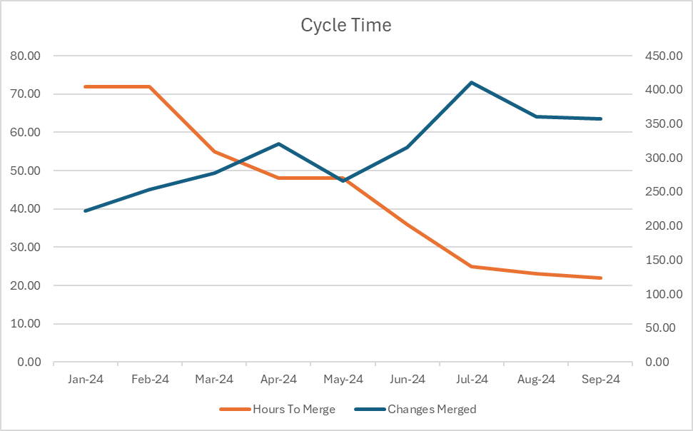
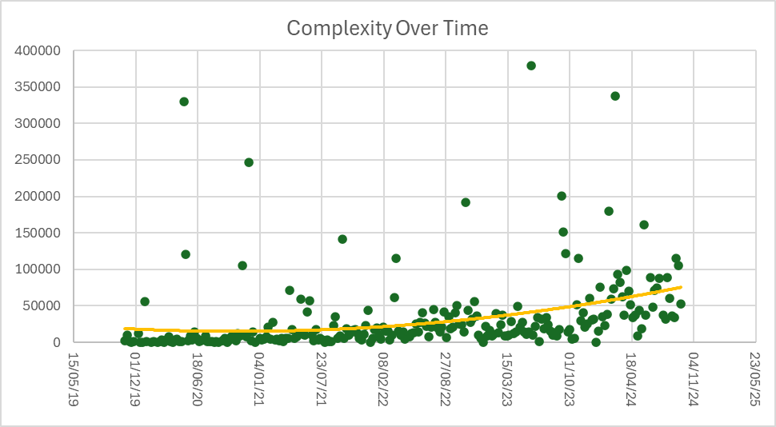

The DORA metrics from the annual state of devops report are the most widely respected measures of business success related to productivity for software engineers:
Everything including methodology is available. It's helpful to have read the book, but not essential.
We have to remember Godwin's Law.
How quickly can we move as an organization to get product out of the door.
Can we move fast without breaking things.
We started the year with a dev day and we talked about what we would drive over the course of the year.
We wanted to release a lot more than just once a week.
It was risky, a big headache and still didn't catch all the bugs. If we had recorded Change Fail Percentage, it would have been 100%!
We have gone from 1 release a week to many.
The important thing is on demand and we have that for all of these services:

source: github stats
source: github stats